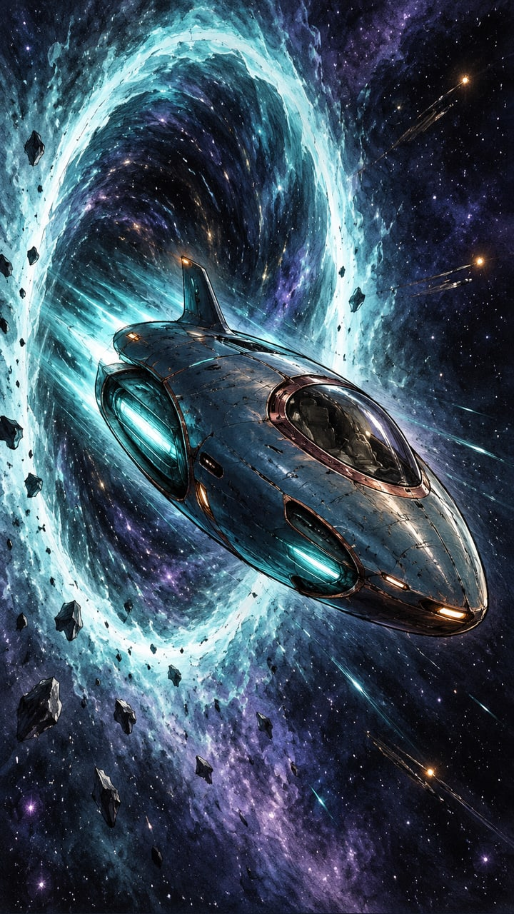
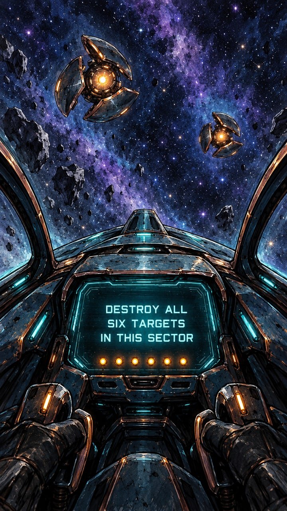
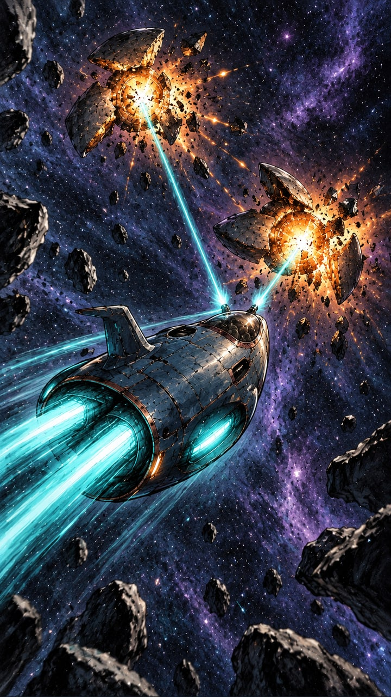
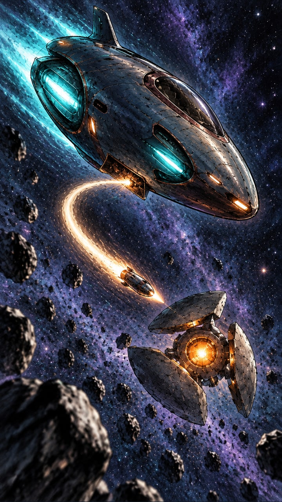
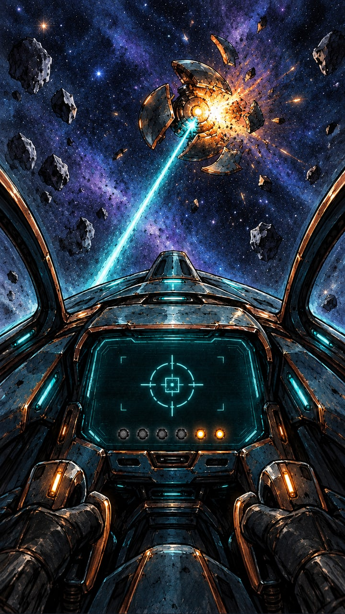
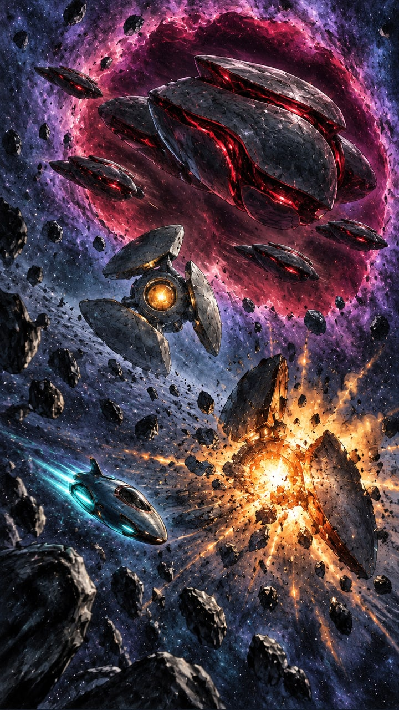
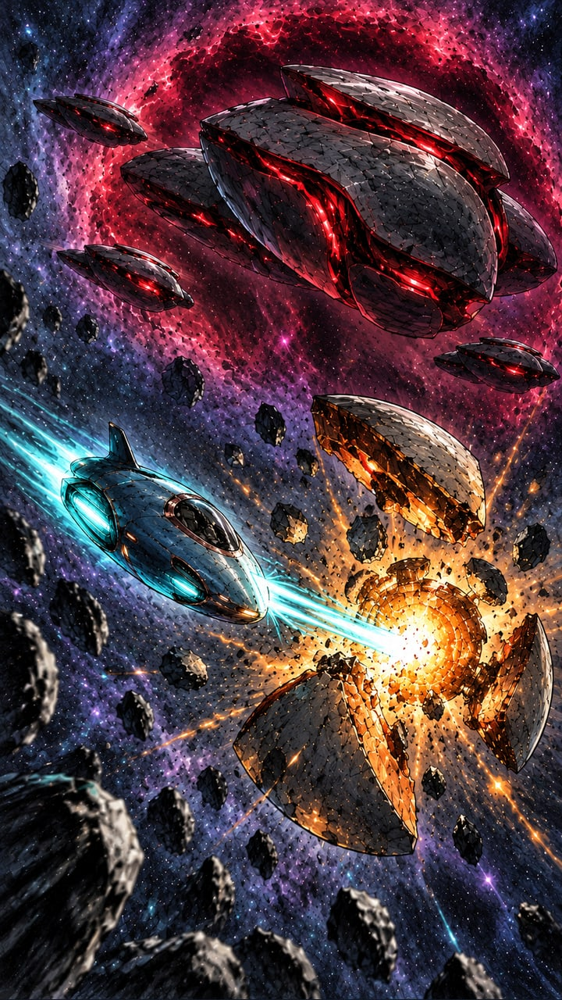
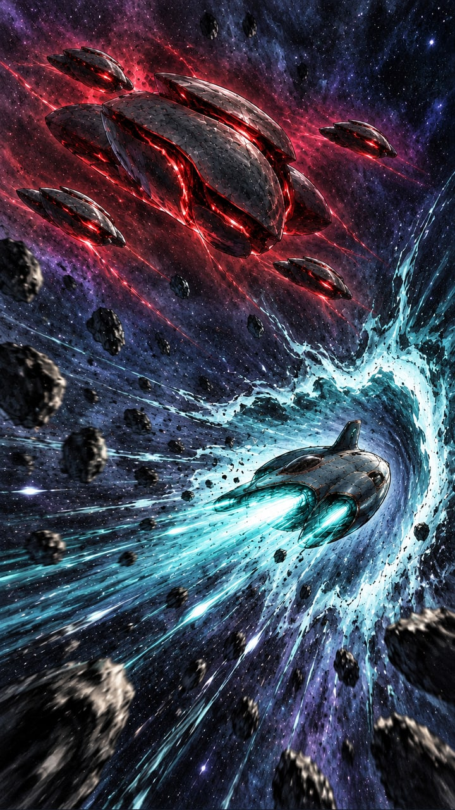

Space adventure · Storyboard-Skizzen
8 KI-generierte Konzeptbilder · Hochformat 9:16 · 30 Sekunden geplant
Storyboard-JSON mit allen Bildern herunterladen · Verwendete Bildprompts (built-in image_gen)
Im Storyboard-Dialog unter „Austausch mit der KI → JSON-Datei öffnen“ importieren, nicht als Video-SceneScript. Anschließend „Änderungen speichern“. ID und Revision 7 bleiben im Antwort-JSON erhalten. Falls du seit dem Export weitergearbeitet oder schon eine KI-Antwort importiert hast, bitte das aktuelle Feedback-JSON bereitstellen, statt den Versionsschutz zu umgehen.
Die Bilder sind visuelle Entwürfe, keine fertigen 3D-Ressourcen oder exakten Animationsframes. Bewegungsfolge, Anzahl der Ziele und vier Begleitschiffe richten sich nach dem Storyboard-Text. Vorhandenes Video und Startprojekt werden nicht geändert. Charaktere und Schauplätze verwenden passende Einstellungsbilder als Referenz, keine zusätzlichen Modellblätter.

1. Space tears open 3 s
Start immediately with a luminous seam ripping open in the centre of the portrait frame. An elongated turquoise-white wormhole expands and the small fighter bursts through, close enough to establish its distinctive shape. Its thrusters flare as it banks into the relay sector. The aperture contracts and closes completely before the cockpit cut. Sketch brief: a small fighter emerging diagonally toward the viewer, framed by a tall glowing aperture; distant relay lights hint at the route ahead.

2. Six targets. One fighter. 3 s
Cut into the fighter from the pilot's perspective after the arrival aperture has closed. The central display already shows "DESTROY ALL SIX TARGETS IN THIS SECTOR" in large stable English text; do not spend reading time on a typing animation. Six amber indicator lights illuminate together. Through the canopy, the first two relays line up ahead. Keep the mission readable for most of the shot. Sketch brief: a framed cockpit view with the mission screen in the middle and two distant targets visible above it.

3. Targets one and two 4 s
The fighter performs one sweeping attack pass. Two short turquoise laser bursts hit two separate relays in succession. Clearly show the first relay flash and break apart before the second impact. Debris travels away from the fighter's route, and both destroyed positions remain visibly empty. No extra devices are destroyed in the background. Sketch brief: two readable impact beats along a curved flight path, with the fighter crossing between them.

4. A torpedo finds its mark 4 s
A small underside launch hatch opens and releases one compact torpedo with a warm white propulsion trail. The torpedo curves toward the third relay and detonates inside its shielding plates. The target breaks into a few large, readable fragments. The fighter continues past without stopping. Sketch brief: fighter in the upper-left centre, torpedo trail drawing a curve toward a relay in the lower central area.

5. Through the debris 4 s
Return to pilot-eye view. Three of the six progress lights are already extinguished. The fighter threads a generous gap between drifting fragments, lines up the fourth relay and fires a short laser burst. The relay flashes and disintegrates beyond the canopy; the fourth indicator goes dark, leaving two lit. Use a simple targeting bracket without more readable text. Sketch brief: cockpit foreground, an unobstructed target near the centre and a few fragments framing the outer edges.

6. One target left — company arrives 4 s
The fighter launches a torpedo at the fifth relay; its destruction is clearly visible in the foreground. Immediately afterward, a much larger violet-red spatial seam opens behind the remaining sixth relay. The command vessel pushes through, followed by four escorts. Their scale reveals that the fighter is badly outmatched. Leave the sixth relay intact and visible. Sketch brief: a small foreground explosion, one surviving amber relay and an enormous opening revealing layered fleet silhouettes behind it.

7. Finish the mission 4 s
The fleet turns toward the fighter. Red weapon channels brighten and targeting lights converge, visibly preparing an attack. Instead of engaging the fleet, the fighter makes one decisive pass at the final relay and fires a concentrated laser burst. The sixth target breaks apart just before the fleet can fire. Briefly cut to the cockpit display: all six progress lights are dark and a large green check symbol confirms completion. Sketch brief: the tiny fighter crossing the final amber relay while the looming command vessel's red weapon channels charge behind it.

8. Gone before the first shot 4 s
A new, small turquoise-white wormhole opens directly ahead of the fighter, spatially separate from the fleet's arrival aperture. The fighter accelerates through it. The opening snaps shut just before the fleet releases its first volley; the red shots cross the empty location where the fighter had been. End with a brief readable hold on the closed escape point and the outmanoeuvred fleet. No additional targets remain intact. Sketch brief: fighter entering a narrow bright aperture, distant fleet aligned behind it, followed by an empty-space final composition.